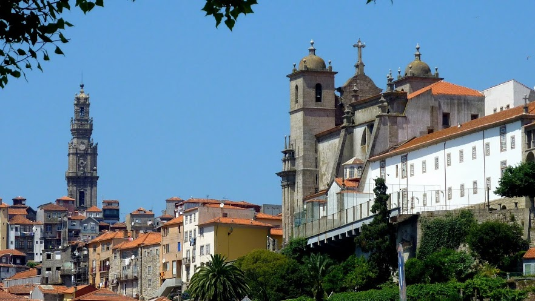

Main speakers
- Romain Aimino (Rome - Tor Vergata)
- Henk Bruin (Vienna)
- Jean-René Chazottes (Ecole Polytechnique)
- Vaughn Climenhaga (Houston)
- Neil Dobbs (Geneva)
- Pedro Duarte (Lisbon)
- Mark Holland (Exeter)
- Thomas Jordan (Bristol)
- João Lopes Dias (Lisbon)
- Ian Melbourne (Warwick)
- Matthew Nicol (Houston)
- Mark Pollicott (Warwick)
- Christian Rodrigues (Max-Planck)
- Dan Thompson (Ohio State)
- Sandro Vaienti (Marseille/Luminy)
- Paulo Varandas (UFBA)
| |

|